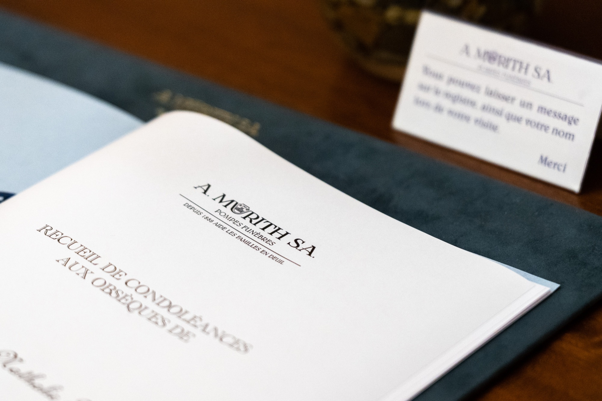

A família de
Sr./Sra. …………..
profundamente tocada por todas as demonstrações de simpatia e afeto que lhe foram testemunhadas no seu grande luto, agradece-lhe muito sinceramente e pede-lhe que encontre aqui a expressão do seu vivo reconhecimento

Serviços funerários em Genebra desde 1888
Cartões de agradecimento
Murith SA — Desde 1888 a ajudar as famílias enlutadas
Os nossos modelos
Eis os nossos modelos de cartões de agradecimento
Textos
Propomos-lhe alguns modelos de textos:
Profundamente tocada pelas demonstrações de simpatia e afeto recebidas por ocasião do falecimento de
Sr./Sra. …………..
a sua família agradece-lhe muito sinceramente a presença, as doações, os envios de flores, as mensagens de condolências e pede-lhe que encontre aqui a expressão do seu vivo reconhecimento.
De todo o coração e com profunda emoção, a família de
Sr./Sra. …………..
agradece-lhe o afeto e o apoio que lhe testemunhou na sua imensa dor. Pede-lhe que acredite no seu vivo reconhecimento.
A família de
Sr./Sra. ………………………………………..
profundamente tocada por todas as demonstrações de simpatia e afeto que lhe foram testemunhadas no seu grande luto, agradece muito sinceramente a todas as pessoas que a rodearam com a sua presença, as suas mensagens ou os seus envios de flores e pede-lhes que encontrem aqui a expressão do seu vivo reconhecimento.
De todo o coração e com profunda emoção, a família de
Sr./Sra. …………………………………………
agradece a todas as pessoas que lhe testemunharam afeto e simpatia na sua imensa dor. Pede-lhes que acreditem no seu vivo reconhecimento.
Profundamente tocada pelas demonstrações de simpatia e afeto recebidas por ocasião do falecimento de
Sr./Sra. …………………………………………
a sua família agradece muito sinceramente a todas as pessoas que a rodearam com a sua presença, as suas doações, os seus envios de flores ou as suas mensagens de condolências e pede-lhes que encontrem aqui a expressão do seu vivo reconhecimento.
Pode também enviar-nos por e-mail para murith@murith.ch qualquer outro texto à sua conveniência e faremos o necessário para o imprimir no modelo de cartão da sua escolha.
Convites a condizer
Propomos convites a condizer com os cartões de agradecimento. Para mais informações, não hesite em contactar-nos: + 41 (0) 22 809 56 00
Acabou de ocorrer um falecimento?
A nossa equipa orienta-o de imediato nos primeiros passos, sem compromisso.
Preparar o seu próprio funeral em vida
Bastam alguns minutos. Não é pedido qualquer dado pessoal nesta fase.